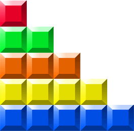

In this coding activity, you will write a program that can act as the player in a game of Tetris. Well, okay, not exactly Tetris: in this game there are 5 possible pieces, each of which is a rod of a certain length. Blocks fall from the sky, one at a time, and you need to place them such that they fall next to each other in full rows of 10. When a row is full, it disappears. The game is driven by a set of function calls:
new_block() triggers the next block. block_size() tells you the size of the block. position(col) sets the horizontal position of the block, from 1 to 10. game_over() is True if you've run out of space.
The example below will place a couple of blocks, and then quit. Run it by clicking Fast, Slow, or Step.